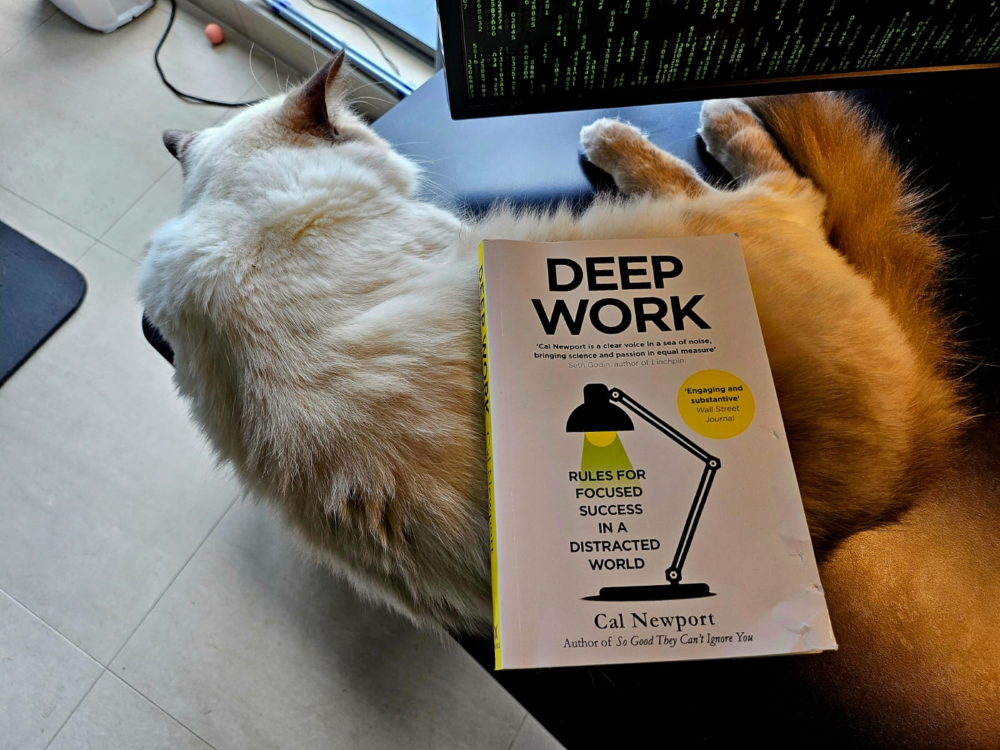

读《Deep Work》

上周读完了 Cal Newport 所著的《Deep Work》。这本书的语言风格对于我来说并不让我觉 得很流畅。我实验性得选择在最后一个章节阅读中译本，发现可读性对于我个人而言并没有 明显变化。所以我建议读者可以考虑直接阅读中译本。
这是一本讨论为何以及如何“深度”工作的书。“深度”在这里不仅代表工作内容的深度，并且 也涵盖工作方式上的高度专注。作者将“深度工作”定义为：
Deep work: hard but important intellectual work completed during long uninterrupted periods of time. Deep work requires a state of distraction‐free concentration to push your cognitive capabilities to their limit and create new value that is hard to replicate.
与之相反的，作者将“浅工作”（Shallow Work）定义为：
Shallow work: non‐cognitively demanding, logistical‐style tasks that can be completed in a semi‐distracted state. Shallow work includes answering email, sorting documents, and running errands. The less engagement your work requires, the more shallow it is.
作者预言，在不远的未来，“浅工作”将会是最快被人工智能或者更低廉的劳动力所取代的。 显然，如果你的工作（内容或方式）越“浅”，那么你的技能和价值将不再“稀有”，因此也会 自然而然地被市场上更廉价的机器或人所取代。
那么，我们该如何帮助自己建立起“深度工作”呢？作者提出了一些方法，并称之为“深度工 作仪式”（Deep Work Ritual）。以下是我总结并翻译的一些要点：
小心谨慎的选择你专有的工作地点
这个地点可以很简单，比如你平时的办公室，只要关上门，清理好桌面（我的一个同事在 处理难题时喜欢在他的办公室门上挂一个酒店式的“请勿打扰”牌）。如果能够找到一个专 门用于深度工作的地点，比如一个会议室或安静的图书馆，效果会更好。
明确的工作时间、内容范围
为自己设定一个具体的时间范围，将每次“深度工作”视为一个明确的、限时限量的挑战， 而不是无休止的苦差事。通过设定一个清晰的结束时间，你允许自己集中精力并体验“不 适感”，因为你知道“不适感”将在何时结束。
制定易于坚持实施的“深度工作”流程与结构
你的“深度工作仪式”需要规则和流程来保持你的努力有条不紊。没有这样的结构，你就必 须一次又一次在心里评判在这些“仪式”中应该做什么，不应该做什么，以及不断尝试评估 你是否足够努力工作。 这些都是对你意志力储备的不必要消耗。
身体上和精神上的充足补给
“深度工作”需要确保你的大脑获得充足能量，以保持高效的深度工作状态。例如，每天你 可以从一杯好茶、咖啡开始，或一份丰盛的早餐来确保你能获取足够的、合适类型的食物 以保持能量。抑或在生活种融入适当运动，如散步，以帮助保持头脑清晰。
虽然《Deep Work》成书于 2016 年之前，作者的观点放到现在来看却并不过时。在 2016 年，“大语言模型”的状态依旧在破晓时分1，人们对于人工智能宿命般的降临并不像如 今这样处在更激烈的憧憬和恐惧的争论与矛盾之中。我们有时可能会把注意力放在争论和恐 惧上而因此分了心，《Deep Work》在当下却正是一本可以帮助你换一个角度，鼓励你审视 甚至重组自身工作内容和工作方式的书。虽然我个人的阅读体验不如以往流畅，但是我依然 十分推荐。
Footnotes:
Google 的 Transformer 架构发表于 2017 年，之后的不久，GPT-1 于 2018 年间问 世。